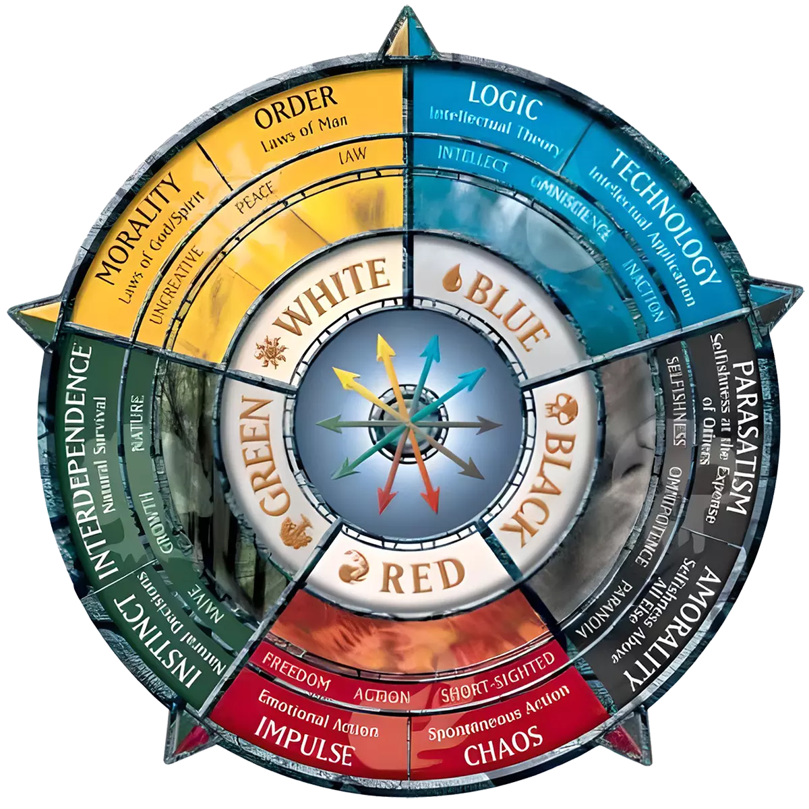

- Commune (C) : 24 à 30 cartes
- Peu Commune (U) : 15 à 20 cartes
- Rare (R) : 8 à 12 cartes
- Mythique Rare (M) : 1 à 3 cartes (incluses dans les rares)
Et environ :
- Terrains : 22 à 26 cartes (selon la courbe de mana et la stratégie)
Évidemment, on va en avoir beaucoup plus, mais on va se concentrer sur des sets de départ, Y’a un début à tout!
| Rareté | Nombre de cartes | Pourcentage | Remarques |
| Communes (C) | 30 | 50 % | Bases solides, faciles à comprendre, souvent humoristiques ou parodiques. Personnages génériques du quotidien ou imaginaire pour les créatures, qu’on peut retrouver en plusieurs exemplaires dans le deck (ex.: citoyens, étudiants, activistes, écologistes) |
| Peu communes (U) | 18 | 30 % | Mécaniques un peu plus subtiles, interactions uniques, ou clins d’œil plus poussés. Personnages secondaires pas nécessairement legendary. Souvent fortes en fonction de d’autres cartes. |
| Rares (R) | 10 | 16,7 % | Cartes fortes ou mécaniques plus folles, équilibrées mais impressionnantes. Personnages connus (legendary creatures). Nécessitent parfois d’autres cartes pour réaliser leur plein potentiel en boostant d’autres cartes du même thème ou viennent avec un “flaw” pour équilibrer leur force. |
| Mythiques (M) | 2 | 3,3 % | Cartes absurdes ou légendaires, « boss » du set, mais toujours jouables. |
🧱 Structure de types
| Type | Estimation | Notes |
| Créatures | 25–30 cartes | Essentielles au combat, parfaites pour l’humour visuel et les habiletés. |
| Éphémères / RituelsInstant | 10–15 cartes | Gags en une action, parodies de sortilèges classiques. Interaction durant le tour des autres joueurs, donc effets surprise (ex.: donner un coup de poêlonne dans face de Bonhomme). |
| Enchantements | 3–6 cartes | Effets passifs absurdes ou caricaturaux. Effets qui perdurent d’un tour à l’autre qui peuvent être reliés à des évènements comme une élection, une grève, un état d’urgence, une guerre commerciale, etc. |
| Artefacts | 2–5 cartes | Objets ridicules, objets culturels québécois, robots, marionnettes, livres, films, accessoire d’un personnage connu (ex.: la poêlonne de Bob Binette, le foie d’Éric Lapointe, la gaine d’Elvis Gratton, etc.). |
| Planeswalkers / Sagas | 0–1 | Optionnel, pour une carte-clé mythique. |
| Terrains | 8–12 cartes | Terrains thématiques drôles mais fonctionnels. Des lieux communs, des landmarks québécois, des structures, des paysages, des villes, des régions, etc. |
| Couleur | Cartes approx. | Thèmes possibles |
| Blanc | 8–10 | Justice, ordre, bureaucratie, affaires et finances |
| Bleu | 8–10 | Intellect, réseaux sociaux, sarcasme, culture, science |
| Noir | 8–10 | Humour noir, pouvoir, corruption, droite conservatrice, désastres environnementaux |
| Rouge | 8–10 | Colère, alcool, chaos, complotistes, douchebags |
| Vert | 8–10 | Nature, écolos, bouffe, gauchistes, syndicalistes |
| Incolore / Multicolore | 4–6 | Cartes de crossover ou de satire globale; événements historiques, personnages majeurs |
| Terrains | 8–12 | Lieux absurdes (terrain de paintball, casse-croûte, etc.) |
🔁 Mécaniques à inclure ou tester
| Mécanique | Type | Idée d’humour |
| Saga | Mythique | Événement historique détourné |
| Modalité (choix) | Commune+ | "Choisissez votre insulte préférée..." |
| Mutuel / Coopératif | Rare | Cartes qui impliquent les deux joueurs |
| Pénalité ridicule | Unco+ | Perdre des points de vie "par gêne" |
| Hasard contrôlé | Commune | Roue du destin, lancer une frite, etc. |
| Quotes | Commune | Le joueur adverse doit lire le flavor text de la carte en imitant le personnage de la carte et les joueurs votent si ça passe ou pas; on indique alors la conséquence sur la carte |
| Tribal | Toute | Types de créatures à privilégier et en développer un certain nombre de chaque (ex.: politiciens, artistes, citoyens, activistes, complotistes) et relier des spells à ces types de créatures |
| Confusion | Unco | L’objet de la carte est weird, épeurant ou confusant, le joueur adverse mills des cartes/discarte des cartes/perd des points de vie. |
- Draftable en petit format (2 à 4 boosters de 15 ou 20 cartes).
- Decks construits fun : les cartes doivent pouvoir interagir entre elles, même dans un format farfelu.
- Humour en priorité : chaque carte doit faire sourire, rire ou réagir.
Dernière mise-à-jour: